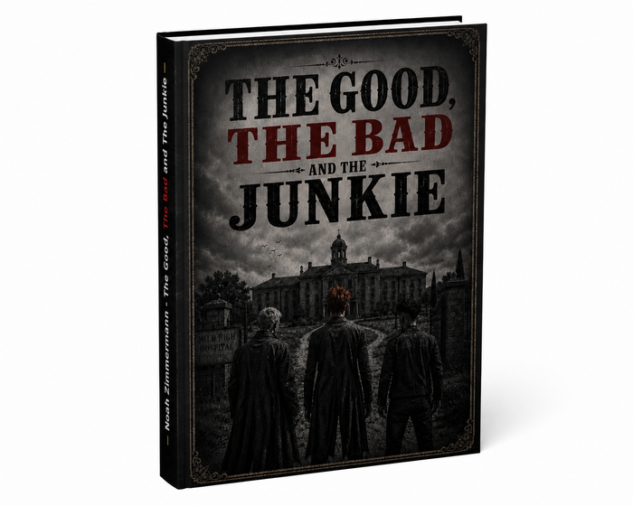

THE GOOD,
THE BAD
AND THE JUNKIE
Ein Klinikroman über Angst, Schuld, Kontrollverlust und die Menschen, die bleiben, wenn eigentlich nichts mehr geht. Düster, ehrlich und trotzdem nicht ohne Hoffnung.
Zum Buch